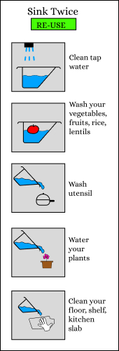
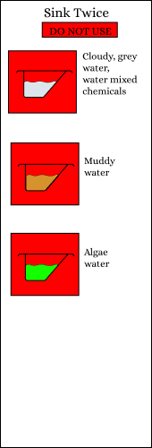

Available in Red Color
Get in touch for placing your order
We are designed to bring sustainability at your home so you can save every drop of the water.
The prouduct is made from 3D printing using non damaging PLA material.
Our product can hold water upto 1.25 litres and fit in any sink. The base of the product is very sturdy and so it can sit in your sink if it is big in the size.
We have designed this prodcut to help you realize the fresh water wastage in your home.
As a human you are more responsible for the well being of our plant earth. Although the earth is 75% water but still fresh water is scarcity in many land.
A little change in your behaviour can impact the future of our coming generation and the health of this earth.
Are you ready to be the part of this revolution?
Get in touch for placing your order
Get in touch for placing your order
The sink twice is very easy to use. You can place it in you sinks of Kitchen and Wash basin.
The Sink can be easily fit or sit in the wash basin. You can fill water and use it as you please.
In every household kitchen sinks are of various size. Our Sink can fit on the top of Medium and Small size sink very easily.
There are some ways in which you can re-use the water. You should always look the color of the water and smell if it is not pungent you can always re-use it.
After extensive research and use these are the situation where re-using of water without treatment or filteration will be hazadrous for your health.
If you have any query about the product or want to place the order. Write to us now.